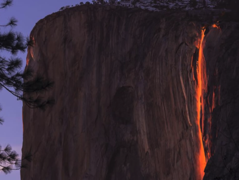

CS184 Final Project Proposal
Amal Mehta, Jason Zou, Srikar Boinapally, Jonathan Pan
Waterfall Simulation
Project Summary
The goal of our project is to build a waterfall simulation that not only behaves realistically but looks aesthetically pleasing as well. We hope to utilize existing work in simulating water particles and existing knowledge of waterfall physics to produce this simulation.
Problem Description
Waterfalls are a very aesthetically and spiritually pleasing element of nature that can add to the user experience within simulated environments such as games and VR. Unlike other types of water sources, water particles from waterfalls are moving at a much higher velocity and crash into each other often, creating different and more concentrated visual effects (e.g. water from waterfalls often looks white). Given that many water simulations already exist, and that waterfalls are likely well understood physically, we hope to combine these two types of knowledge to produce the simulation we desire.
Goals and Deliverables
What we plan to deliver: We plan to deliver a qualitatively pleasing simulation of a waterfall. In general this means the waterfall will have smooth particles, no gaps in flow, and maintain the flow physics of what is expected when a waterfall is imagined. In short, create a photorealistic representation of a waterfall. One important feature that we need to desire is to represent how the bubbles in waterfalls refract and reflect light, which makes the falling water often appear white to the eye. Rendering speeds should also be relatively reasonable. The baseline goal will just be a clean flow of water from a reasonable height that crashes down and distributes at the end of the fall.
What we hope to deliver: We hope to create more complex structures and elements that interact with the waterfall. Perhaps a two tiered waterfall with rocks placed at interesting points along the falls. Iguazu Falls is a good example of what our reach goal aims to deliver.
The interaction of lighting with the waterfall can also be modified. The inspiration for this modification comes from Yosemite’s Horsetail Falls.
|

Yosemite’s Horsetail Falls
|
Measures of success: We aim to create a photorealistic representation of a waterfall. One important feature that we wish to represent is how the bubbles in waterfalls refract and reflect light, which makes the falling water often appear white.
Schedule
Resources
We will refer to the following papers for information, which both attempt to tackle similar problems:
Particle based Waterfall Simulation with Spray Cloud Emerging from Basin,
Modelling and Rendering of Realistic Waterfall Scenes with Dynamic Texture Sprites
We plan to use our own hardware for this project(Windows/Mac).
We own the following GPUS: Nvidia 960M, Nvidia 1650 Super, Nvidia 940MX
For software, we intend to use OpenGL.